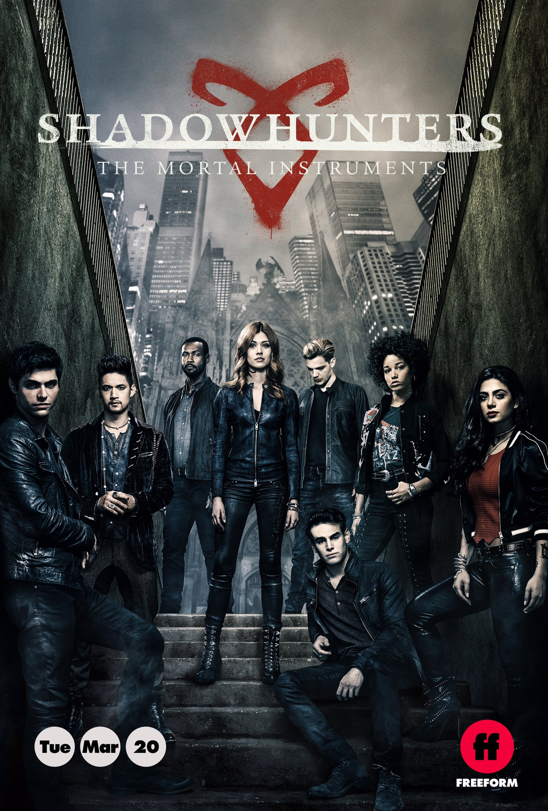
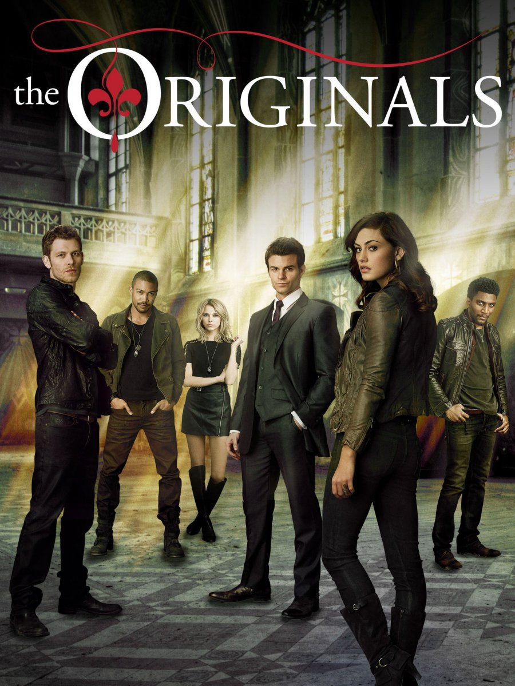

Lucifer
2016 - 2021 / 42min / Drama, Fantasia, Policial
Criado por Tom Kapinos
Elenco: Tom Ellis, D.B. Woodside, Lauren German
Cansado da vida que leva no Inferno, Lucifer (Tom Ellis) decide abandonar seu trono e se muda para Los Angeles. Lá, ele se junta à policial Chloe (Lauren German) para desvendar casos de homicídio e rastrear os mais diferentes criminosos.
2
Raio Negro
2018 - 2021 / 42min / Super-herói, Drama
Criado por Salim Akil
Elenco: Cress Williams, China Anne McClain, Nafessa Williams, Christine Adams
Jefferson Pierce, que se aposentou da sua personalidade de super-herói, Raio Negro, há nove anos, depois de ver os efeitos que isso teve na sua família, é obrigado a tornar-se um vigilante novamente quando o surgimento de uma gangue local chamada "Os 100" leva ao aumento do crime e da corrupção na sua comunidade.

3
Shadowhunters
2016 - 2019 / 42min / Drama, Fantasia, Ação
Criado por Todd Slavkin, Edward Decter, Darren Swimmer
Elenco: Katherine McNamara, Dominic Sherwood, Alberto Rosende
Quando descobre que é metade humana e metade anjo, Clary Fray (Katherine McNamara) vê sua vida mudar completamente. A jovem, então, passa a fazer parte de um grupo de caçadores de demônios.

4
The originals
2013-2018 / 40–45 minutos / Drama, Fantasia, Suspense
Criado por Julie Plec
Elenco: Joseph Morgan, Daniel Gillies, Claire Holt
Um spin-off de The Vampire Diaries, que se passa em New Orleans. A série é centrada nos irmãos Mikaelson, que são conhecidos como os vampiros originais do mundo: Klaus (Joseph Morgan), Elijah (Daniel Gilles), e Rebekah (Claire Holt). Séculos atrás, eles prometeram ficar juntos para sempre e proteger uns aos outros. Agora, os laços familiares quebrados, tragédia e fome recaem como maldição àqueles que não cumpriram seus votos.
5
Van Helsing
2016 - 2021 / 42-43 minutos / Fantasia, Horror, Drama, Ação, Pós-apocalíptico
Criado por Neil LaBute
Elenco: Kelly Overton, Jonathan Scarfe, Nicole Munoz
Descendente do grande Abraham Van Helsing, Vanessa Helsing (Kelly Overton) é ressuscitada em um mundo pós-apocalíptico devastado por vampiros sanguinários.Agora, ela é a última esperança para salvar o planeta Terra, já que sua composição sanguínea única lhe permite transformar vampiros em seres humanos.